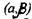
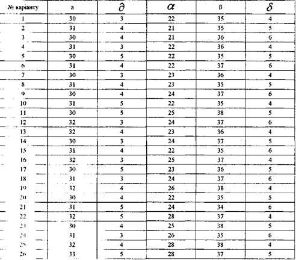

Середній діаметр стовбурів дерев на деякій ділянці - а, середнє квадратичне відхилення -
Діаметр стовбура випадково вибраного дерева опиниться в інтервалі
2)діаметр стовбура дерева буде менше а см;
3)діаметр стовбура дерева не перевищує βсм;
4)абсолютна величина відхилень X -а не перевищить а см;
5)визначити величину, якої не перевищить діаметр стовбура випадково вибраного дерева з імовірністю 0,95.
-